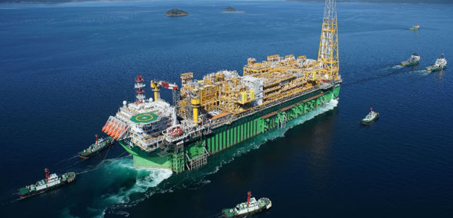

본문컨텐츠영역
BUSINESS
삼성중공업이 세계 조선시장의 새 역사를 창조해 나가겠습니다.

- 해양산업
- 삼성중공업은 드릴십, FPSO 분야에서 세계 최다 건조실적을 보유하고 있습니다. 또한 고도의 안정성과 기술력을 필요로 하는 고정식 해양플랫폼, TLP, 부유식 해상구조물 등 해양개발설비 시장에서도 축적된 선박 건조 기술을 바탕으로 세계 주요 오일 메이저 기업들로부터 인정을 받고 있습니다.
Investment Information
삼성중공업의 주가정보를 알려드립니다.
- 삼성중공업(010140)
- 7,140 480
- 시가7,240
- 저가7,080
- 고가7,250
- 거래량27,593
NEWS
삼성중공업의 최신 뉴스를 알려드립니다.